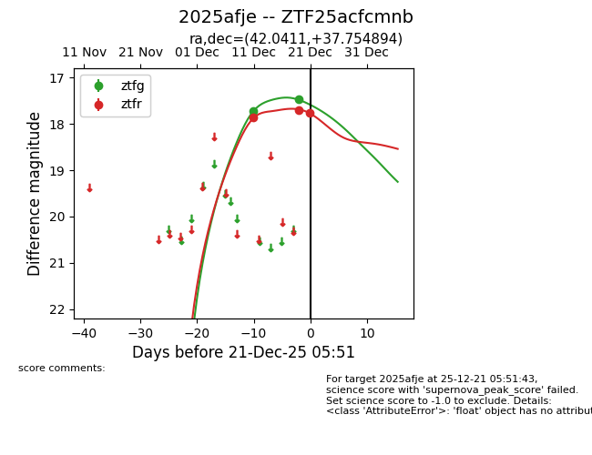
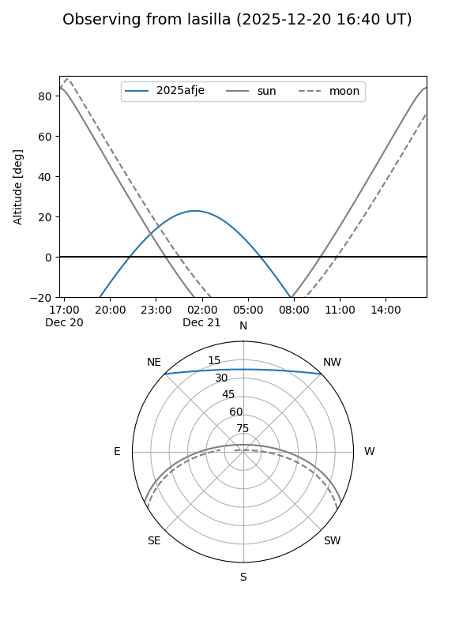
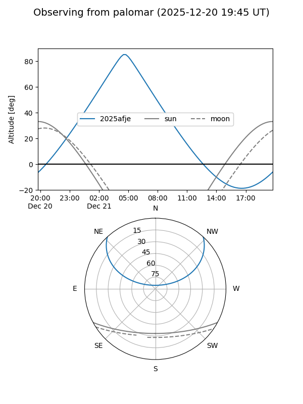
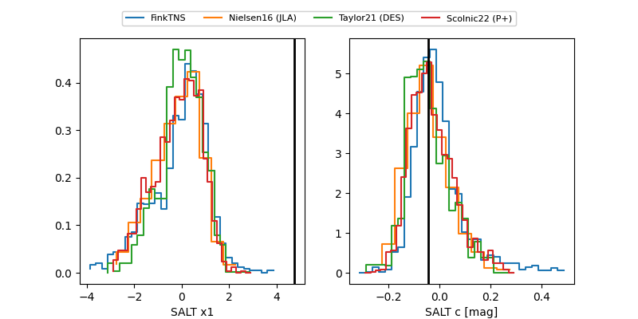

2025afje
Target 2025afje at 2025-12-28 09:01
Aliases and brokers:
FINK: fink-portal.org/ZTF25acfcmnb
Lasair: lasair-ztf.lsst.ac.uk/objects/ZTF25acfcmnb
ALeRCE: alerce.online/object/ZTF25acfcmnb
TNS: wis-tns.org/object/2025afje
YSE: ziggy.ucolick.org/yse/transient_detail/2025afje
alt names
ZTF25acfcmnb (ztf,fink_ztf)
2025afje (tns,yse)
Coordinates:
equatorial (ra, dec) = 42.0411,+37.75489
equatorial (HMS+DMS) = 02:48:09.87,+37:45:17.62
galactic (l, b) = (147.0843,-19.58204)
Flags:
Photometry:
last ztfg=17.63, ztfr=17.76
3 ztfg, 3 ztfr detections
Lightcurve

Visibility


Additional plots
